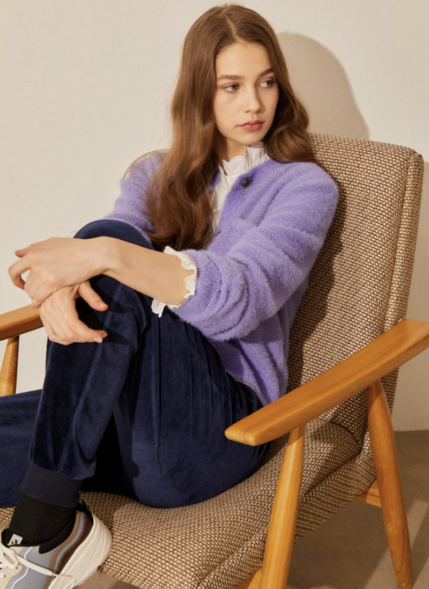

WOMEN'S FASHION
Introducing the Pantone Color of the Year 2022, PANTONE 17-3938 Very Peri, a dynamic periwinkle blue hue with a vivifying violet red undertone blends the faithfulness and constancy of blue with the energy and excitement of red. Very peri displays a spritely, joyous attitude and dynamic presence that encourages courageous creativity and imaginative expression. Last year, the colour authority broke tradition and announed not one, but two defining Colors of the Year 2021 that were chosed to help people fortify themselves with energy, clarity and hope admist uncertanity.
TOP
|  |
BOTTOM
ACC
COLOR PALETTE
You can use the color palette below for a variety of combinations
 |